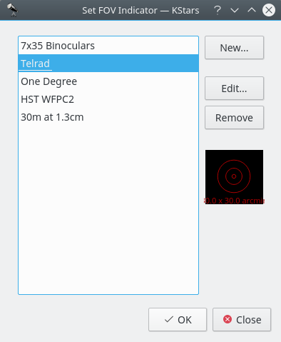
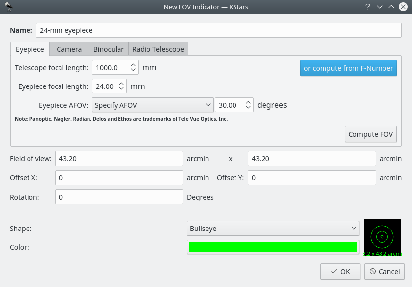

Customizing the Display
There are several ways to modify the display to your liking.
- Select a different color scheme in the Settings → Color Schemes menu. There are four predefined color schemes, and you can define your own in the Configure KStars window.
- Toggle whether the Toolbars are drawn in the Settings → Toolbars Shown menu. Like most KDE toolbars, they can also be dragged around and anchored on any window edge, or even detached from the window completely if they are unlocked.
- Toggle whether the Info Boxes are drawn in the Settings → Info Boxes menu. In addition, you can manipulate the three Info Boxes with the mouse. Each box has additional lines of data that are hidden by default. You can toggle whether these additional lines are visible by double-clicking a box to “shade” it. Also, you can reposition a box by dragging it with the mouse. When a box hits a window edge, it will “stick” to the edge when the window is resized.
- Choose an “FOV Symbol” using the Settings → FOV Symbols menu. FOV is an acronym for “field-of-view”. An FOV symbol is drawn at the center of the window to indicate where the display is pointing. Different symbols have different angular sizes; you can use a symbol to show what the view through a particular telescope would look like. For example, if you choose the “7x35 Binoculars” FOV symbol, then a circle is drawn on the display that is 9.2 degrees in diameter; this is the field-of-view for 7x35 binoculars.
You can define your own FOV symbols (or modify the existing symbols) using the Edit FOV Symbols... menu item, which launches the FOV Editor:

The list of defined FOV symbols is displayed on the left. On the right are buttons for adding a new symbol, editing the highlighted symbol's properties, and removing the highlighted symbol from the list. Note that you can even modify or remove the four predefined symbols (if you remove all symbols, the four defaults will be restored the next time you start KStars). Below these three buttons is a graphical preview display showing the highlighted symbol from the list. When the New... or Edit... button is pressed, the New FOV Indicator window is opened:

This window lets you modify the four properties that define a FOV symbol: name, size, shape, and color. The angular size for the symbol can either be entered directly in the Field of View edit box, or you can use the Eyepiece/Camera Tabs to calculate the field-of-view angle, given parameters of your telescope/eyepiece or telescope/camera setup. The five available shapes are: Square, Circle, Crosshairs, Bullseye and Semitransparent circle. Once you have specified all four parameters, press Ok, and the symbol will appear in the list of defined symbols. It will also be available from the Settings → FOV Symbols menu.